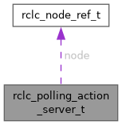

- Generated by
 1.15.0
1.15.0
|
nros C API
Lightweight ROS 2 client for embedded real-time systems
|
#include <nros_generated.h>

Data Fields | |
| uint64_t | _opaque [ACTION_SERVER_OPAQUE_U64S] |
| struct rclc_node_ref_t | node |
| enum rclc_action_server_state_t | state |
An action server the CALLER drives, with no executor (phase-487 W4).
The C counterpart of C++'s nros::PollingActionServer<A>. _opaque holds an ActionServerCore (five channels, goal table, buffers) from rclc_polling_action_server_init until rclc_polling_action_server_fini. Zero-initialised is UNINITIALIZED. Until phase-487 it was the NROS_ACTION_SERVER_STATE_POLLING state of rcl_action_server_t.
| uint64_t rclc_polling_action_server_t::_opaque[ACTION_SERVER_OPAQUE_U64S] |
Inline storage for the ActionServerCore. Internal: treat as opaque.
| struct rclc_node_ref_t rclc_polling_action_server_t::node |
The node the channels were created on.
| enum rclc_action_server_state_t rclc_polling_action_server_t::state |
Current state: UNINITIALIZED, INITIALIZED (core live) or SHUTDOWN.